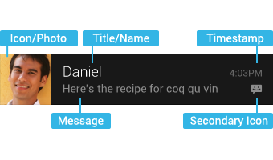
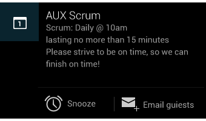

この節の導入：
この節では、Androidでステータスバーに通知情報を表示するためのコントロール「Notification」を紹介します。多くのAndroid学習者にとっておなじみだと思いますが、ネット上のNotificationの使用チュートリアルの多くは2.xベースのものです。しかし、現在一般的なAndroidデバイスは基本的に4.x以上、さらには5.0以上もあります。それぞれのNotificationは異なります！この節では4.x以上のNotificationを中心に解説しますが、5.0以上のNotificationについては、発展チュートリアルの「Android 5.0の新機能」の章で解説します。
公式ドキュメントによるNotificationの紹介：
設計思想：Notifications in Android 4.4 and Lower
翻訳：通知
APIドキュメント：Notification
上記のサイトにアクセスするには、VPN（梯子）が必要かもしれませんよ～
1. 設計ドキュメント部分の解説
1）Notificationの基本レイアウト

上記の構成要素は順に次のとおりです：
- Icon/Photo：大きなアイコン
- Title/Name：タイトル
- Message：コンテンツ情報
- Timestamp：通知時間。デフォルトはシステムが通知を発行した時刻ですが、setWhen()で設定することもできます。
- Secondary Icon：小さなアイコン
- 内容文字、小さいアイコンの左側にある文字
2）拡張レイアウト
Jelly Beanでは、通知にさらに多くのイベントの詳細を提供できます。拡張レイアウトを使用すると、メッセージの最初の数行や画像のプレビューを表示できます。これにより、ユーザーはより多くのコンテンツを表示でき、場合によってはメッセージ全体を表示することもできます。ユーザーはピンチズーム（pinch-zoom）または2本指スワイプで拡張レイアウトを開くことができます。Androidは、単一のメッセージに対して、開発時に使用できる2種類の拡張レイアウト（テキストと画像）を提供しています。


他の設計上の詳細については、一つ一つ挙げることはしません。興味があれば上記のAPIドキュメントを参照してください。4.x以上のバージョンではNotificationが多種多様であることを知っておけば十分です！私たちは、コードを書いてこれを使用する方法により注目しています。それでは、Notificationの使い方を学んでいきましょう。
2. Notificationの基本使用フロー
ステータス通知バーには主に2つのクラスが関係します：Notification と NotificationManager
Notification：通知情報クラス。通知バーの各属性に対応しています。
NotificationManager：ステータスバー通知の管理クラスで、通知の発信や通知のクリアなどの操作を担当します。
使用する基本フロー：
- Step 1.NotificationManagerオブジェクトを取得する： NotificationManager mNManager = (NotificationManager) getSystemService(NOTIFICATION_SERVICE);
- Step 2.通知バーのBuilder構築クラスを作成する： Notification.Builder mBuilder = new Notification.Builder(this);
- Step 3.Builderに対して関連する設定を行います。例えば、タイトル、内容、アイコン、アクションなどです！
- Step 4.Builderのbuild()メソッドを呼び出してnotificationに値を代入します。
- Step 5NotificationManagerのnotify()メソッドを呼び出して通知を送信します！
- PS:また、NotificationManagerのcancel()メソッドを呼び出して通知をキャンセルすることもできます。
3. 設定に関するいくつかのメソッド：
Notification.Builder mBuilder = new Notification.Builder(this);
その後、以下の関連メソッドを呼び出して設定します：（公式APIドキュメント：Notification.Builder)
- setContentTitle(CharSequence)：タイトルを設定します
- setContentText(CharSequence)：コンテンツを設定します
- setSubText(CharSequence)：内容の下にある小さな1行のテキストを設定します
- setTicker(CharSequence)：通知を受け取ったときに上部に表示されるテキスト情報を設定します
- setWhen(long)：通知時間を設定します。通常は通知を受け取ったときのSystem.currentTimeMillis()を設定します。
- setSmallIcon(int)：右下隅の小さいアイコンを設定します。通知を受け取ったとき、上部にもこの小さいアイコンが表示されます。
- setLargeIcon(Bitmap)：左側の大きなアイコンを設定します。
- setAutoCancel(boolean)：ユーザーがNotificationパネルをクリックした後に通知をキャンセルするかどうか（デフォルトではキャンセルしません）
- setDefaults(int)：通知にサウンド、フラッシュライト、バイブレーション効果を追加する最も簡単な方法です。デフォルト（defaults）属性を使用すると、複数の属性を組み合わせることができます。
Notification.DEFAULT_VIBRATE（デフォルトのバイブレーション通知を追加）；
Notification.DEFAULT_SOUND（デフォルトのサウンド通知を追加）；
Notification.DEFAULT_LIGHTS（デフォルトの3色ライト通知を追加）
Notification.DEFAULT_ALL（デフォルトの上記3種類すべての通知を追加）- setVibrate(long[])：バイブレーション方式を設定します。例：
setVibrate(new long[] {0,300,500,700}); 0ms遅延、その後300ms振動、さらに500ms遅延、次に700ms振動します。Vibrateの使い方については後で解説します！- setLights(int argb, int onMs, int offMs)：3色ライトを設定します。パラメータは順に、ライトの色、点灯時間、消灯時間です。すべての色が使えるわけではなく、デバイスに関係します。一部のスマートフォンには3色ライトが搭載されていません。さらに、NotificationのflagsにNotification.FLAG_SHOW_LIGHTSを設定しないと、3色ライトの通知はサポートされません。
setSound(Uri)：通知を受け取ったときの着信音を設定します。システムのものを使用することも、自分で設定することもできます。例は以下のとおりです。
.setDefaults(Notification.DEFAULT_SOUND) // デフォルトの着信音を取得
.setSound(Uri.parse("file:///sdcard/xx/xx.mp3")) // カスタム着信音を取得
.setSound(Uri.withAppendedPath(Audio.Media.INTERNAL_CONTENT_URI, "5")) // Androidマルチメディアライブラリ内の着信音を取得setOngoing(boolean)：trueに設定すると、進行中の通知であることを示します。これらは通常、バックグラウンドタスク、ユーザーが積極的に関与している（音楽再生など）、または何らかの形で待機しているためデバイスを占有している（ファイルダウンロード、同期操作、アクティブなネットワーク接続など）ことを表すために使用されます。
- setProgress(int,int,boolean)：プログレスバー付きの通知を設定します。 パラメータは順に：プログレスバーの最大値、現在のプログレス、プログレスが不確定かどうか。 確定プログレスバーの場合：setProgress(max, progress, false)を呼び出して通知を設定します。 プログレスを更新するときに、ここで通知を再度発行してprogressを更新します。ダウンロード完了後は、setProgress(0, 0, false)を呼び出してプログレスバーを削除します。 不確定（継続的活動）のプログレスバーの場合、これは進捗を正確に把握できないときに活動が継続していることを表示するものです。setProgress(0, 0, true)を呼び出します。操作が終了したら、setProgress(0, 0, false)を呼び出して通知を更新し、インジケーターバーを削除します。
setContentIntent(PendingIntent)：PendingIntentはIntentと少し異なり、実行回数を設定できます。主にリモートサービス通信、アラーム、通知、ランチャー、SMSなどで使用され、一般的な場合にはあまり使われません。例えば、ここではPendingIntentを介してActivityを起動します：getActivity(Context, int, Intent, int)。もちろん、ServiceやBroadcastを起動することもできます。PendingIntentのビット識別子（第4パラメータ）：
FLAG_ONE_SHOT返されたPendingIntentが一度だけ実行できることを示し、実行後は自動的にキャンセルされます。
FLAG_NO_CREATE記述されたPendingIntentが存在しない場合、対応するPendingIntentを作成せず、NULLを返すことを示します。
FLAG_CANCEL_CURRENT対応するPendingIntentがすでに存在する場合、前者をキャンセルして新しいPendingIntentを作成します。これはデータを最新に保つのに役立ち、インスタントメッセージングの通信シナリオに使用できます。
FLAG_UPDATE_CURRENT更新されたPendingIntentを示します。
使用例：
//点击后跳转Activity Intent intent = new Intent(context,XXX.class); PendingIntent pendingIntent = PendingIntent.getActivity(context, 0, intent, 0); mBuilder.setContentIntent(pendingIntent)setPriority(int)：優先度を設定します：
対応する属性：Notification.PRIORITY_HIGH...
優先度 ユーザー MAX 重要かつ緊急の通知。このイベントが時間的に緊迫している、または直ちに対処する必要があることをユーザーに通知します。 HIGH 高優先度は、ショートメッセージやチャットなど、ユーザーにとって関心の高い重要な通信コンテンツに使用されます。 DEFAULT デフォルト優先度は、特別な優先度分類がない通知に使用されます。 LOW 低優先度は、ユーザーに通知できるが、それほど緊急ではないイベントに使用されます。 MIN バックグラウンドメッセージ（天気や位置情報など）に使用されます。最低優先度の通知はステータスバーにアイコンのみ表示され、ユーザーが通知ドロワーを下にスワイプしたときにのみ内容を確認できます。
4. コード例：最も一般的なNotification：
それでは、Notificationの使い方を体験するための最も簡単な例を書いてみましょう：
実行結果のスクリーンショット：

主要コード：
ここに直接貼るMainActivity.javaコード：
public class MainActivity extends AppCompatActivity implements View.OnClickListener {
private Context mContext;
private NotificationManager mNManager;
private Notification notify1;
Bitmap LargeBitmap = null;
private static final int NOTIFYID_1 = 1;
private Button btn_show_normal;
private Button btn_close_normal;
@Override
protected void onCreate(Bundle savedInstanceState) {
super.onCreate(savedInstanceState);
setContentView(R.layout.activity_main);
mContext = MainActivity.this;
//创建大图标的Bitmap
LargeBitmap = BitmapFactory.decodeResource(getResources(), R.mipmap.iv_lc_icon);
mNManager = (NotificationManager) getSystemService(NOTIFICATION_SERVICE);
bindView();
}
private void bindView() {
btn_show_normal = (Button) findViewById(R.id.btn_show_normal);
btn_close_normal = (Button) findViewById(R.id.btn_close_normal);
btn_show_normal.setOnClickListener(this);
btn_close_normal.setOnClickListener(this);
}
@Override
public void onClick(View v) {
switch (v.getId()) {
case R.id.btn_show_normal:
//定义一个PendingIntent点击Notification后启动一个Activity
Intent it = new Intent(mContext, OtherActivity.class);
PendingIntent pit = PendingIntent.getActivity(mContext, 0, it, 0);
//设置图片,通知标题,发送时间,提示方式等属性
Notification.Builder mBuilder = new Notification.Builder(this);
mBuilder.setContentTitle("叶良辰") //标题
.setContentText("我有一百种方法让你呆不下去~") //内容
.setSubText("——记住我叫叶良辰") //内容下面的一小段文字
.setTicker("收到叶良辰发送过来的信息~") //收到信息后状态栏显示的文字信息
.setWhen(System.currentTimeMillis()) //设置通知时间
.setSmallIcon(R.mipmap.ic_lol_icon) //设置小图标
.setLargeIcon(LargeBitmap) //设置大图标
.setDefaults(Notification.DEFAULT_LIGHTS | Notification.DEFAULT_VIBRATE) //设置默认的三色灯与振动器
.setSound(Uri.parse("android.resource://" + getPackageName() + "/" + R.raw.biaobiao)) //设置自定义的提示音
.setAutoCancel(true) //设置点击后取消Notification
.setContentIntent(pit); //设置PendingIntent
notify1 = mBuilder.build();
mNManager.notify(NOTIFYID_1, notify1);
break;
case R.id.btn_close_normal:
//除了可以根据ID来取消Notification外,还可以调用cancelAll();关闭该应用产生的所有通知
mNManager.cancel(NOTIFYID_1); //取消Notification
break;
}
}
}
コメントが非常に詳しいので、一つ一つ詳しく説明はしません〜
5. コード例のダウンロード：
この節のまとめ：
はい、このセクションではNotificationの4.xバージョンでの基本的な使い方を紹介しました。とても簡単ですよね〜
もちろん、Notificationをカスタマイズすることもできます。興味があればご自身で関連資料を調べてください。ここでは詳しく研究しません〜そうそう、このセクションの一部の内容は以下のblogを参考にしています。リンクを貼っておくので、皆さんも見てみてください：Android 通知欄Notificationの統合 完全学習 （一つのDEMOで完全に理解できます）かなり詳しく書かれています〜このセクションはここまでです。ありがとうございます〜
クリックしてノートを共有
ノートは本記事の内容の拡張である必要があります！
記事の投稿は、ここをクリックできます
登録招待コードの取得方法
ノートを共有する前にログインが必要です！
登録招待コードの取得方法